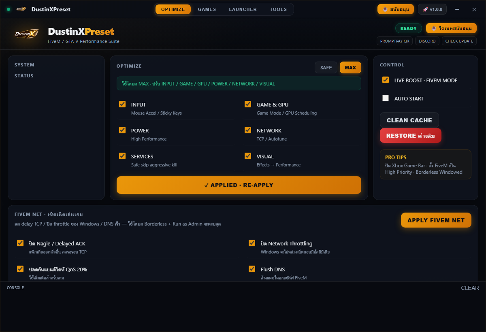

รีดสมรรถนะ FiveM และ GTA V ถึงขีดสุด บันทึกภาพระดับ 2K 60FPS ฮาร์ดแวร์เร่งความเร็ว ไร้กระตุก เคลียร์แคชลึก และเร่งความไวอินพุต Timer 0.5ms ฟรี 100%
DustinXPreset_Setup.exe · 74.6 MB · Standalone Installer · ปลอดภัย ไม่แถมโปรแกรมแฝง

ทุกฟังก์ชันออกแบบมาเพื่อแก้ปัญหาเฟรมตก ไมโครสตัตเตอร์ (Micro-stuttering) และอาการกระตุกขณะเข้าเมือง
อัดคลิปและไฮไลท์ 1440p 60FPS โดยใช้ชิปฮาร์ดแวร์ GPU (AMD AMF / Nvidia NVENC) กินเฟรมเรตในเกมน้อยที่สุด ภาพคมชัดระดับ Lossless
ล้างแคชเซิร์ฟเวอร์, NUI Storage, และไฟล์ขยะเบื้องหลังอย่างหมดจด โดยไม่ลบ game-storage เข้าเมืองไวขึ้น โหลดแมพไม่หลุด
ปรับจังหวะสัญญาณนาฬิกาของระบบ Windows เป็น 0.5 มิลลิวินาที ลดความหน่วงการกดปุ่ม (Input Delay) ตอบสนองไวกว่าเดิม
จูนไฟล์ settings.xml อัตโนมัติ ปิดเงาหนักๆ แสงสะท้อน และเอฟเฟกต์ที่กินสเปก ดัน FPS พุ่งสูงสุด พร้อมปุ่ม Restore คืนค่าเดิมได้ทันที
โปรแกรม DustinXPreset พัฒนาขึ้นมาเพื่อให้ทุกคนได้ใช้งานฟรี 100% ทุกฟังก์ชัน หากคุณชอบและอยากให้มีการพัฒนาแพตช์ FiveM ใหม่อย่างต่อเนื่อง สามารถสแกน QR Code หรือโอนผ่านพร้อมเพย์ได้เลยครับ ขอบคุณทุกแรงใจครับ! ❤️
สแกน QR Code หรือโอนผ่านบัญชีด้านล่าง